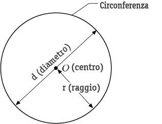
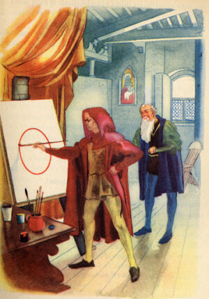
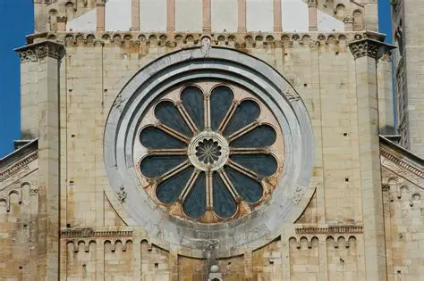

Come nasce la circonferenza: La circonferenza è il luogo dei punti che stanno tutti alla stessa distanza da un punto centrale. Un'ellisse ha due fuochi e la somma delle distanze da questi due punti è sempre costante. Se i due fuochi dell'ellisse coincidono, cioè diventano un unico punto, l'ellisse si "trasforma" in una circonferenza: per questo diciamo che la circonferenza è un'ellisse speciale. La sua storia risale a moltissimi anni fa, quando Greci e Romani la usarono per studiare il cielo, costruire templi e capire il movimento dei pianeti. Archimede la studiò per calcolare il valore di π (pi greco), approssimato a 3,14. Nel Rinascimento, la circonferenza divenne simbolo di perfezione e armonia, privilegiata in archi e cupole.
La scienza moderna:
Con l'avvento della scienza moderna, la circonferenza ha assunto un ruolo ancora più centrale. In fisica descrive il moto circolare, le rotazioni, le forze centripete; in meccanica è alla base di ruote, ingranaggi, turbine, volani. Ogni oggetto che ruota, dal più semplice al più sofisticato, nasce dalla comprensione della circonferenza. Anche nella tecnologia contemporanea la ritroviamo ovunque: nei dischi ottici, negli obiettivi fotografici, nei sensori e nei componenti elettronici che sfruttano simmetrie circolari per funzionare con precisione.
La leggenda di Giotto:
Papa Bonifacio VIII mandò un emissario a chiedere a Giotto un disegno che dimostrasse la sua bravura.
Giotto prese un pennello e tracciò un cerchio perfetto a mano libera, senza compasso.
L'emissario rimase perplesso, ma il Papa capì subito: solo un artista straordinario poteva fare una cosa così difficile con tanta naturalezza.
Il cerchio è una figura così armoniosa e perfetta che è quasi impossibile realizzarla a mano, ma Giotto ci riuscì, diventando il simbolo della sua bravura.

Curiosità:
π è un numero infinito, senza ripetizioni e impossibile da scrivere completamente: è uno dei numeri più misteriosi della matematica.
Fin dall'antichità, in molte culture la circonferenza rappresentava perfezione, eternità e armonia, ed è per questo che compare in mandala, rosari, rosoni delle chiese e architetture sacre.
